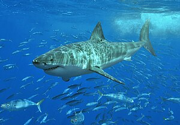
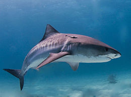
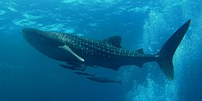
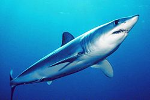
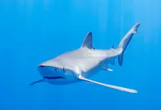
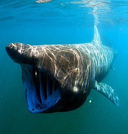
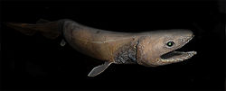
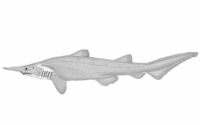

Escualiformes
Tiburón Blanco (Carcharodon carcharias)
El gran tiburón blanco es el depredador ápice de los océanos, conocido por su gran tamaño y poderosa mordida. Su cuerpo hidrodinámico le permite nadar a grandes velocidades y su excelente visión y olfato lo convierten en un cazador formidable. Aunque se le considera un peligro para los humanos, los ataques no son frecuentes. Su reproducción es ovovivípara, es decir, los embriones se desarrollan dentro de huevos dentro del cuerpo de la madre.
Tiburón Martillo (Sphyrna mokarran)
La característica más distintiva del tiburón martillo es su cabeza en forma de martillo, que contiene los órganos de los sentidos electrosensitivos que le permiten detectar presas enterradas en la arena. Son animales sociales que forman grupos y se alimentan principalmente de peces óseos y crustáceos.

Tiburón Tigre (Galeocerdo cuvier)
El tiburón tigre es un cazador oportunista que se alimenta de una amplia variedad de presas, incluyendo peces, tortugas marinas, aves y hasta objetos inanimados. Sus rayas distintivas le proporcionan camuflaje en aguas turbias. Es una especie prolífica y su tasa de reproducción relativamente alta le permite mantener poblaciones estables.
Tiburón Toro (Carcharias taurus)
El tiburón toro es una especie extremadamente adaptable que puede vivir en aguas saladas, dulces y salobres. Su tolerancia a una amplia gama de condiciones ambientales lo ha llevado a colonizar diversos hábitats, desde estuarios hasta ríos. Es una especie agresiva y se han registrado numerosos ataques a humanos.

Tiburón Ballena (Rhincodon typus)
El tiburón ballena es el pez más grande del mundo y se alimenta filtrando grandes cantidades de agua para capturar plancton. A pesar de su tamaño, es un animal inofensivo para los humanos. Su reproducción aún no se conoce en detalle, pero se cree que es ovovivípara.
Tiburón Mako (Isurus oxyrinchus)
El tiburón mako es uno de los nadadores más rápidos del océano, capaz de alcanzar velocidades de hasta 70 km/h. Su cuerpo es perfecto para la natación y su dieta se basa principalmente en peces como el atún y el marlín. Es una especie altamente migratoria y su carne es muy valorada, lo que ha llevado a una sobrepesca.
Tiburón Azul (Prionace glauca)
El tiburón azul es una especie migratoria que realiza largos viajes a través de los océanos. Se alimenta de una variedad de presas, incluyendo peces, calamares y crustáceos. Su coloración lo ayuda a camuflarse en el agua, siendo azul oscuro en el dorso y blanco en el vientre.
Tiburón Peregrino (Cetorhinus maximus)
El tiburón peregrino es el segundo pez más grande del mundo y se alimenta filtrando grandes cantidades de agua para capturar plancton. Es un animal lento y pacífico que pasa la mayor parte del tiempo cerca de la superficie.
Tiburón Anguila (Chlamydoselachus anguineus)
El tiburón anguila es un fósil viviente que ha cambiado poco en millones de años. Habita en las profundidades marinas y su cuerpo alargado y flexible le permite moverse con agilidad en aguas estrechas. Se alimenta de peces y calamares.
Tiburón Duende (Mitsukurina owstoni)
El tiburón duende es una de las criaturas marinas más extrañas, con una larga nariz y mandíbulas protuberantes que le permiten capturar presas en las profundidades marinas. Se sabe poco sobre su biología y comportamiento.
Tabla Comparativa de Tiburones
| Especie | Tamaño máximo | Hábitat | Alimentación | Peligroso para humanos |
|---|---|---|---|---|
| Tiburón Blanco | 6 metros | Océanos templados | Mamíferos marinos, peces | Sí |
| Tiburón Tigre | 5 metros | Océanos tropicales y subtropicales | Todo tipo de presas | Sí |
| Tiburón Martillo | 3.8 metros | Océanos tropicales y subtropicales | Peces óseos, crustáceos | Moderado |
| Tiburón Toro | 3.3 metros | Océanos, estuarios, ríos | Peces, crustáceos, aves | Sí |
| Tiburón Ballena | 12 metros | Océanos tropicales y templados | Plancton | No |
| Tiburón Mako | 4 metros | Océanos templados y tropicales | Peces, calamares | Sí |
| Tiburón Azul | 3.8 metros | Océanos templados y tropicales | Peces, calamares | Moderado |
| Tiburón Peregrino | 12 metros | Océanos templados y fríos | Plancton | No |
| Tiburón Anguila | 2 metros | Aguas profundas | Peces óseos, calamares | No se sabe |
| Tiburón Duende | 1.3 metros | Aguas profundas | Peces óseos, calamares | No se sabe |